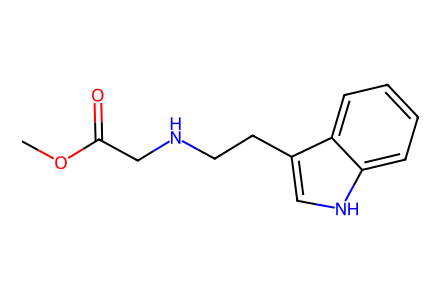
COC(=O)CNCCc1c[nH]c2ccccc1227 个分子记录、18 个制备事件、10 条路径（五个目标各有两种前体方案）。全部按外消旋样品记录；同系化内部结构缺失、3a 立体键冲突及原文分子式错误已标注，正文待补，尚未达到全文全路线完成。
完整 JSON · 逐步 CSV · 路线序列 · SDF · HRMS 核对
| 事件 | 分子连接 | 报告产率 | Canonical reaction SMILES |
|---|---|---|---|
| E01 | 9 + Boc2O → 7 | 7: 79% | CC(C)(C)OC(=O)OC(=O)OC(C)(C)C.COC(=O)CNCCc1c[nH]c2ccccc12>>COC(=O)CN(CCc1cn(C(=O)OC(C)(C)C)c2ccccc12)C(=O)OC(C)(C)C |
| E02 | 7 → 10 | 10: 67% | COC(=O)CN(CCc1cn(C(=O)OC(C)(C)C)c2ccccc12)C(=O)OC(C)(C)C>>CC(C)(C)OC(=O)N(CC=O)CCc1cn(C(=O)OC(C)(C)C)c2ccccc12 |
| E03 | 10 + wittig-ylide → 11 | 11: 62% | CC(C)(C)OC(=O)N(CC=O)CCc1cn(C(=O)OC(C)(C)C)c2ccccc12.CCOC(=O)C=P(c1ccccc1)(c1ccccc1)c1ccccc1>>CCOC(=O)/C=C/CN(CCc1cn(C(=O)OC(C)(C)C)c2ccccc12)C(=O)OC(C)(C)C |
| E04 | 11 → 6 | 6: 75% | CCOC(=O)/C=C/CN(CCc1cn(C(=O)OC(C)(C)C)c2ccccc12)C(=O)OC(C)(C)C>>CC(C)(C)OC(=O)N(C/C=C/CO)CCc1cn(C(=O)OC(C)(C)C)c2ccccc12 |
| E05 | 6 + 5 → 4 | 4: 96% | CC(C)(C)OC(=O)N(C/C=C/CO)CCc1cn(C(=O)OC(C)(C)C)c2ccccc12.O=C(O)CCC1OCCO1>>CC(C)(C)OC(=O)N(C/C=C/COC(=O)CCC1OCCO1)CCc1cn(C(=O)OC(C)(C)C)c2ccccc12 |
| E06 | 8a + 13 → 15 | 15: 57% | COC(=O)/C=C/CBr.NCCc1c[nH]c2ccccc12>>COC(=O)/C=C/CNCCc1c[nH]c2ccccc12 |
| E07 | 15 + Boc2O → 14 | 14: 77% | CC(C)(C)OC(=O)OC(=O)OC(C)(C)C.COC(=O)/C=C/CNCCc1c[nH]c2ccccc12>>COC(=O)/C=C/CN(CCc1cn(C(=O)OC(C)(C)C)c2ccccc12)C(=O)OC(C)(C)C |
| E08 | 14 → 6 | 6: 86% | COC(=O)/C=C/CN(CCc1cn(C(=O)OC(C)(C)C)c2ccccc12)C(=O)OC(C)(C)C>>CC(C)(C)OC(=O)N(C/C=C/CO)CCc1cn(C(=O)OC(C)(C)C)c2ccccc12 |
| E09 | 4 → 16a + 16b | not reported | CC(C)(C)OC(=O)N(C/C=C/COC(=O)CCC1OCCO1)CCc1cn(C(=O)OC(C)(C)C)c2ccccc12>>C=C[C@@H](CN(CCc1cn(C(=O)OC(C)(C)C)c2ccccc12)C(=O)OC(C)(C)C)[C@@H](CC1OCCO1)C(=O)O.C=C[C@@H](CN(CCc1cn(C(=O)OC(C)(C)C)c2ccccc12)C(=O)OC(C)(C)C)[C@H](CC1OCCO1)C(=O)O |
| E10 | 16a + diazomethane → 3a | not reported | C=C[C@@H](CN(CCc1cn(C(=O)OC(C)(C)C)c2ccccc12)C(=O)OC(C)(C)C)[C@@H](CC1OCCO1)C(=O)O.C=[N+]=[N-]>>C=C[C@@H](CN(CCc1cn(C(=O)OC(C)(C)C)c2ccccc12)C(=O)OC(C)(C)C)[C@H](CC(=O)OC)CC1OCCO1 |
| E11 | 3a → 17a + 17a-prime | 17a: 79%; 17a-prime: 7% | C=C[C@@H](CN(CCc1cn(C(=O)OC(C)(C)C)c2ccccc12)C(=O)OC(C)(C)C)[C@H](CC(=O)OC)CC1OCCO1>>C=C[C@H]1CN2CCc3c([nH]c4ccccc34)[C@@H]2C[C@H]1CC(=O)OC.C=C[C@H]1CN2CCc3c([nH]c4ccccc34)[C@H]2C[C@H]1CC(=O)OC |
| E12 | 17a → IV | IV: 89% | C=C[C@H]1CN2CCc3c([nH]c4ccccc34)[C@@H]2C[C@H]1CC(=O)OC>>C=C[C@H]1CN2CCc3c([nH]c4ccccc34)[C@@H]2C[C@H]1CCO |
| E13 | IV → V | V: 81% | C=C[C@H]1CN2CCc3c([nH]c4ccccc34)[C@@H]2C[C@H]1CCO>>CC[C@H]1CN2CCc3c([nH]c4ccccc34)[C@@H]2C[C@H]1CCO |
| E14 | 16b + diazomethane → 3b | not reported | C=C[C@@H](CN(CCc1cn(C(=O)OC(C)(C)C)c2ccccc12)C(=O)OC(C)(C)C)[C@H](CC1OCCO1)C(=O)O.C=[N+]=[N-]>>C=C[C@@H](CN(CCc1cn(C(=O)OC(C)(C)C)c2ccccc12)C(=O)OC(C)(C)C)[C@@H](CC(=O)OC)CC1OCCO1 |
| E15 | 3b → 17b + 17b-prime | 17b: 69%; 17b-prime: 11% | C=C[C@@H](CN(CCc1cn(C(=O)OC(C)(C)C)c2ccccc12)C(=O)OC(C)(C)C)[C@@H](CC(=O)OC)CC1OCCO1>>C=C[C@H]1CN2CCc3c([nH]c4ccccc34)[C@@H]2C[C@@H]1CC(=O)OC.C=C[C@H]1CN2CCc3c([nH]c4ccccc34)[C@H]2C[C@@H]1CC(=O)OC |
| E16 | 17b → II | II: 90% | C=C[C@H]1CN2CCc3c([nH]c4ccccc34)[C@H]2C[C@@H]1CC(=O)OC>>C=C[C@H]1CN2CCc3c([nH]c4ccccc34)[C@H]2C[C@@H]1CCO |
| E17 | 17b-prime → I | I: 87% | C=C[C@H]1CN2CCc3c([nH]c4ccccc34)[C@@H]2C[C@@H]1CC(=O)OC>>C=C[C@H]1CN2CCc3c([nH]c4ccccc34)[C@@H]2C[C@@H]1CCO |
| E18 | I → III | III: 85% | C=C[C@H]1CN2CCc3c([nH]c4ccccc34)[C@@H]2C[C@@H]1CCO>>CC[C@H]1CN2CCc3c([nH]c4ccccc34)[C@@H]2C[C@@H]1CCO |

COC(=O)CNCCc1c[nH]c2ccccc12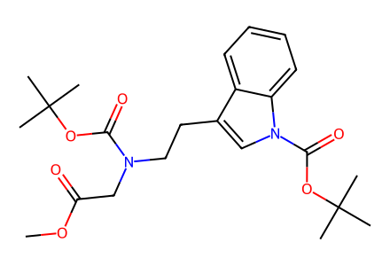
COC(=O)CN(CCc1cn(C(=O)OC(C)(C)C)c2ccccc12)C(=O)OC(C)(C)C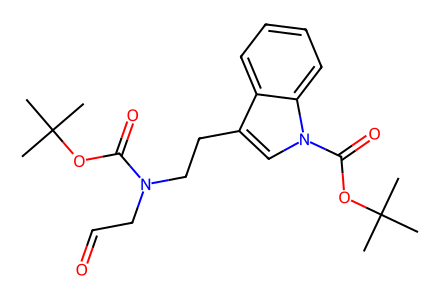
CC(C)(C)OC(=O)N(CC=O)CCc1cn(C(=O)OC(C)(C)C)c2ccccc12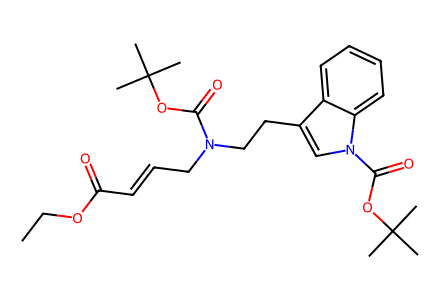
CCOC(=O)/C=C/CN(CCc1cn(C(=O)OC(C)(C)C)c2ccccc12)C(=O)OC(C)(C)C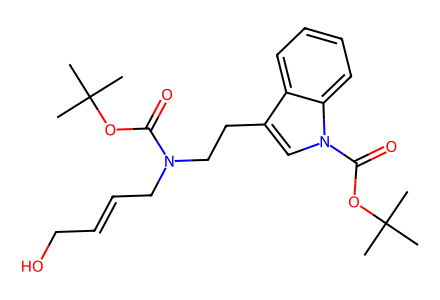
CC(C)(C)OC(=O)N(C/C=C/CO)CCc1cn(C(=O)OC(C)(C)C)c2ccccc12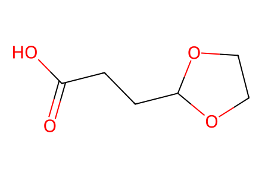
O=C(O)CCC1OCCO1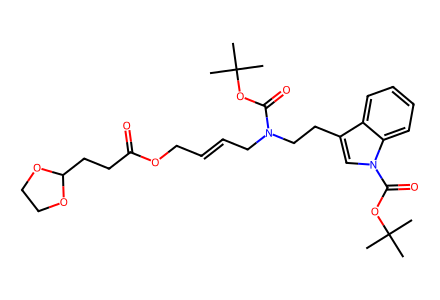
CC(C)(C)OC(=O)N(C/C=C/COC(=O)CCC1OCCO1)CCc1cn(C(=O)OC(C)(C)C)c2ccccc12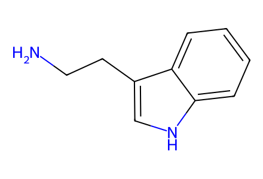
NCCc1c[nH]c2ccccc12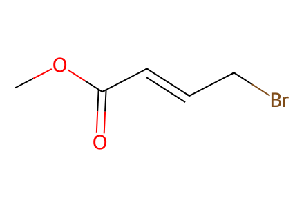
COC(=O)/C=C/CBr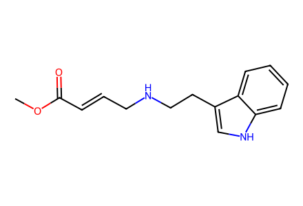
COC(=O)/C=C/CNCCc1c[nH]c2ccccc12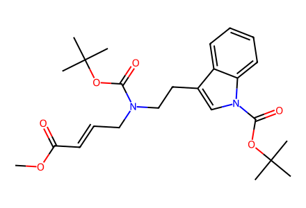
COC(=O)/C=C/CN(CCc1cn(C(=O)OC(C)(C)C)c2ccccc12)C(=O)OC(C)(C)C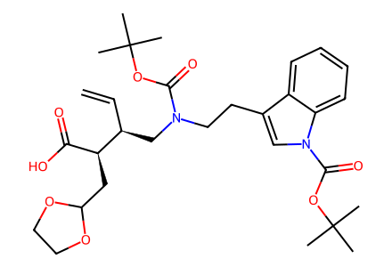
C=C[C@@H](CN(CCc1cn(C(=O)OC(C)(C)C)c2ccccc12)C(=O)OC(C)(C)C)[C@@H](CC1OCCO1)C(=O)O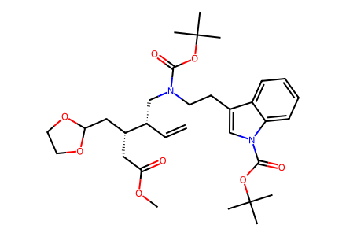
C=C[C@@H](CN(CCc1cn(C(=O)OC(C)(C)C)c2ccccc12)C(=O)OC(C)(C)C)[C@H](CC(=O)OC)CC1OCCO1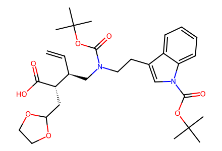
C=C[C@@H](CN(CCc1cn(C(=O)OC(C)(C)C)c2ccccc12)C(=O)OC(C)(C)C)[C@H](CC1OCCO1)C(=O)O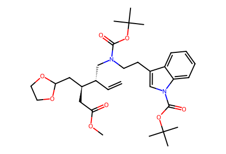
C=C[C@@H](CN(CCc1cn(C(=O)OC(C)(C)C)c2ccccc12)C(=O)OC(C)(C)C)[C@@H](CC(=O)OC)CC1OCCO1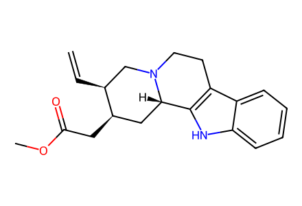
C=C[C@H]1CN2CCc3c([nH]c4ccccc34)[C@@H]2C[C@H]1CC(=O)OC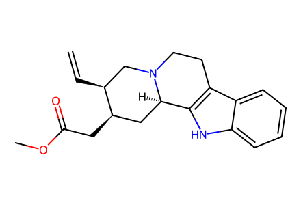
C=C[C@H]1CN2CCc3c([nH]c4ccccc34)[C@H]2C[C@H]1CC(=O)OC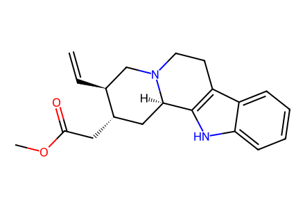
C=C[C@H]1CN2CCc3c([nH]c4ccccc34)[C@H]2C[C@@H]1CC(=O)OC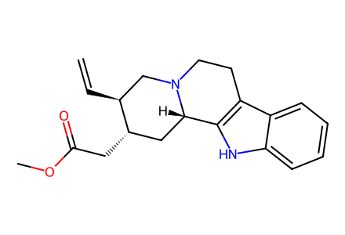
C=C[C@H]1CN2CCc3c([nH]c4ccccc34)[C@@H]2C[C@@H]1CC(=O)OC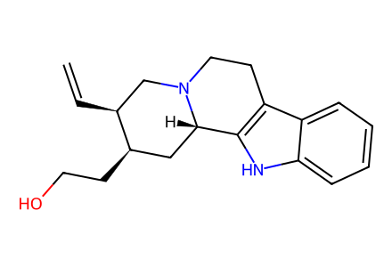
C=C[C@H]1CN2CCc3c([nH]c4ccccc34)[C@@H]2C[C@H]1CCO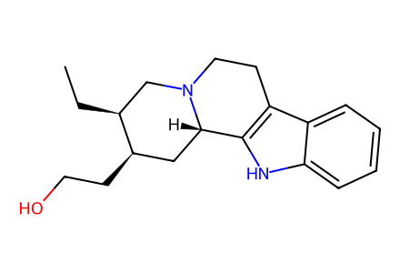
CC[C@H]1CN2CCc3c([nH]c4ccccc34)[C@@H]2C[C@H]1CCO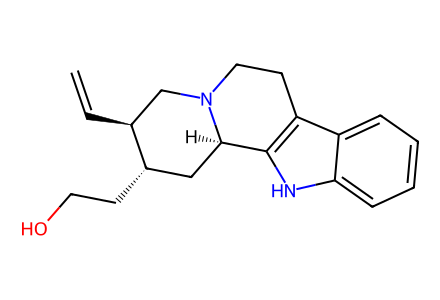
C=C[C@H]1CN2CCc3c([nH]c4ccccc34)[C@H]2C[C@@H]1CCO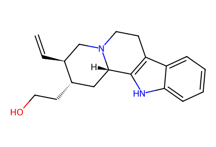
C=C[C@H]1CN2CCc3c([nH]c4ccccc34)[C@@H]2C[C@@H]1CCO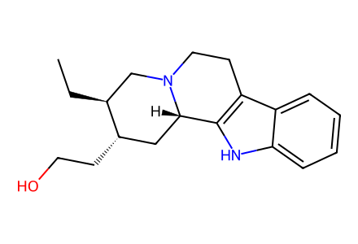
CC[C@H]1CN2CCc3c([nH]c4ccccc34)[C@@H]2C[C@@H]1CCO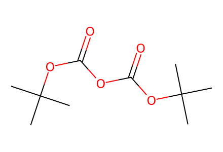
CC(C)(C)OC(=O)OC(=O)OC(C)(C)C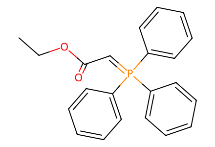
CCOC(=O)C=P(c1ccccc1)(c1ccccc1)c1ccccc1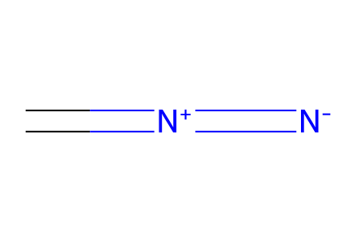
C=[N+]=[N-]